将棋ソフトが提示する"手"は「正しい」のか
- 近年の将棋ソフト: プロ棋士でも太刀打ちできない
- ある局面での「正解手」を知るために将棋ソフトを使う人が多い
- 将棋ソフトが教えてくれる手は本当に正しい(≡一番勝ちやすい)のか？
将棋ソフトが考えているもの
相手が常に最善手を指したときの、局面の評価値が最善になる手
相手は最善の手を指すので...
本当にこの手がいいのか？ -> 局面でのある手の"指しやすさ(思いつきやすさ)"を%化してみると...

実戦的に勝ちやすい = 少し間違えてもひどい事故にはならない
将棋ソフトは正しいの？
藤井聡太竜王はなぜ強いのか？
- 盤面評価の感覚が将棋ソフトに近い
- 読みが速い
- 読みが深い
- 相手が間違えやすい局面(実戦的に勝ちにくい局面)に誘導するのが上手い
(と言われている)